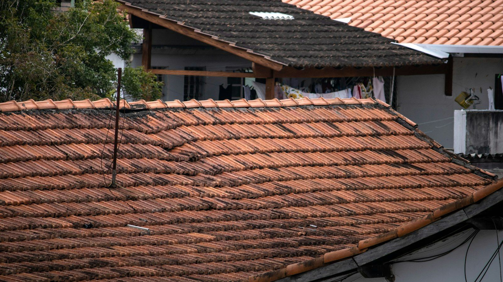

Nothing says Florida quite like a tile roof. It's one of the most common questions we get from people building, buying or replacing: "Should I go with clay or concrete?" And just as often, "Wait, there's a difference?"
There is. From the street they can look almost identical, but they're two very different materials. Here's the same rundown we give people at the kitchen table.
How they're made
Clay tile is natural clay that's shaped and fired in a kiln. The color goes all the way through the tile.
Concrete tile is a mix of sand, cement and water, molded under pressure. The color is either mixed in or applied to the surface, depending on the product.
Weight
Both are heavy compared to shingles, and concrete is usually the heavier of the two. That matters. If you're switching a house from shingles to tile, the roof structure has to be able to carry the extra weight, and that needs to be checked before anything else happens. It's not something to guess at.
Color and fading
Because clay's color is baked in, it holds up beautifully in our sun for a very long time. Concrete tile with a surface color can fade over the years. That's not a defect, it's just the material, but it's worth knowing if you're picking a bold color and want it to look the same in twenty years.

Moisture and mildew
Concrete is more porous than clay, so it soaks up more water. In our humidity, that can mean more mildew and algae, and more frequent cleaning to keep it looking good. Clay is denser and tends to stay cleaner.
Cost
Concrete tile costs less up front, which is a big reason it's the tile you see most around Tampa Bay. Clay is the premium option. Both are a bigger investment than shingle or metal, and both can last a very long time.
The part most people don't know: it's the underlayment
Here's what we wish every tile homeowner understood. The tile itself is not really what keeps the water out. It sheds most of it, but the true waterproofing is the underlayment underneath.
In Florida the tile almost always outlasts that underlayment. Depending on the materials and how the roof was installed, the underlayment can wear out decades before the tile does. When that happens, we can carefully lift the tile, replace the underlayment, and reinstall the good tiles, replacing any that are cracked. A lot of "my tile roof is leaking but the tile looks fine" calls come down to exactly this.
A few other things worth knowing
- Don't walk on it. Both clay and concrete can crack under a footstep in the wrong spot. If something up there needs looking at, let us do it.
- Matching repairs. A storm or a falling branch can crack a few tiles. We work to match the profile and color so the repair blends into the roof.
- Wind. Both hold up well in hurricanes when they're attached the right way for Florida code. The installation matters as much as the material.
So which one should you choose?
If budget is the priority and you want that classic tile look, concrete is a solid, proven choice. If you want color that lasts and you're planning to stay in the home a long time, clay is hard to beat. Either way, the most important decision is who installs it and what goes underneath it.
If you're weighing the two, or you have a tile roof that's starting to show its age, call us. We'll come out and give you a straight answer, not a sales pitch.
Thinking about tile, or have a tile roof that needs attention?
Request a free estimate